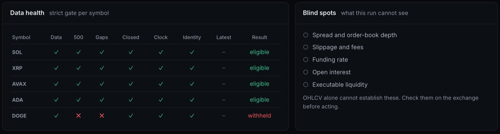

01Problem
Market data is easy to look at but hard to read consistently. The goal is to collect public data, check that it is complete before using it, and turn it into the same set of indicators and explanations every time, so each conclusion can be traced back to the data behind it.
The tool does not place orders, connect to any account, or predict prices.
02Data / Context
Public market data from Binance (OHLCV candles) and Bybit (USDT perpetual contracts). Each candle is stored once per symbol, interval, and open time, so repeated downloads never create duplicates.

03Approach
- Public APIsBinance and Bybit candles
- Validate and storeSQLite, no duplicates
- AnalyseIndicators and scores
- PresentFastAPI and dashboards
From raw candles to the dashboard.
- Data quality first: a historical audit flags gaps, duplicates, and short histories, and symbols that fail are left out instead of guessed.
- Indicator engine: EMA 20/50/200, RSI 14, MACD, Bollinger Bands, ATR 14, and relative volume, computed with pandas. When history is too short, the value stays empty.
- Explainable score: a 0–100 rule-based score from five weighted components (trend, momentum, volume, volatility, risk), each with a written explanation.
- Risk check: a separate layer that flags plans which exceed small-account limits.
04Tools
- Python
- Ingestion, validation, and analysis
- pandas, NumPy
- Indicator calculations on stored candles
- SQLite, SQLAlchemy
- Candle storage with a uniqueness constraint
- FastAPI
- API for market data, analysis, and risk checks
- Streamlit, Plotly
- Dashboard and charts
- JavaScript
- Newer web interface
- pytest
- Automated tests for data and analysis logic
05Current progress
Data ingestion, the data-quality audit, the indicator engine, scoring, and a Streamlit dashboard are working, with an automated test suite. Verification against live Bybit data and market-regime summaries are still in progress.
06My Role
Individual project: designed, built, and tested by Hugo.